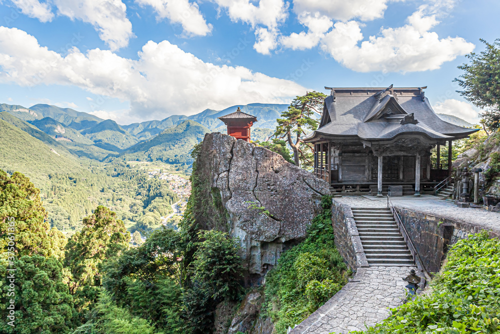

My Dream Vacation: Japan

Why Japan?
For as long as I can remember, traveling to Japan has been at the top of my bucket list. The country offers an incredible contrast between ancient traditions and cutting-edge technology. In a single day, you can visit a serene, centuries-old Shinto shrine and then take a bullet train to a neon-lit, futuristic metropolis. This blend of the old and the new is completely fascinating to me.
Cities to Visit
My itinerary would definitely start in Tokyo. I want to experience the organized chaos of the Shibuya Crossing and explore the electronic district of Akihabara. After spending a few days in the bustling city, I would travel south to Kyoto. Kyoto is famous for its classical Buddhist temples, traditional wooden houses, and beautiful gardens. Walking through the Arashiyama Bamboo Grove is a must-do.
Finally, I would want to visit Osaka. Osaka is known as the kitchen of Japan, and I am highly motivated to try authentic street food like takoyaki and okonomiyaki right from the vendors.
Cultural Experiences
Beyond just sightseeing, I want to participate in traditional cultural activities. I plan to book a stay in a ryokan, which is a traditional Japanese inn. Staying in a ryokan usually includes sleeping on tatami mats and soaking in an onsen, a natural hot spring. It seems like the perfect way to relax after long days of walking and exploring.
Here is a short video highlighting some of the beautiful scenery in Japan.